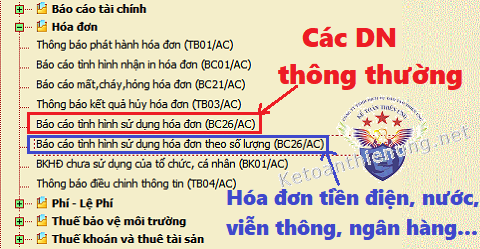
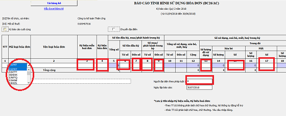
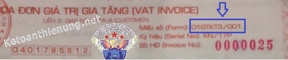
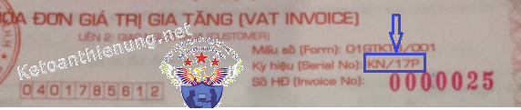
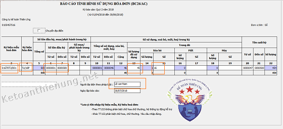
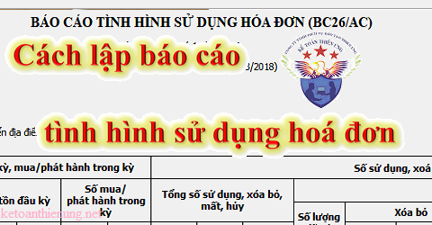

Hướng dẫn lập báo cáo tình hình sử dụng hóa đơn theo quý mẫu BC26-A trên phần mềm HTKK mới nhất, cách ghi các chi tiêu chi tiết như: Cột sử dụng, xoá bỏ, huỷ ... Thời hạn nộp báo cáo sử dụng hoá đơn cho cơ quan thuế:
Chú ý: Khi lập báo cáo tình sử dụng hóa đơn bạn cần biết:
Theo điều 27 Thông tư 39/2014/TT-BTC ngày 31/3/2014 của Bộ tài chính quy định:- Hàng quý DN (kể cả DN mới thành lập) phải nộp Báo cáo tình hình sử dụng hóa đơn.
- Nếu trong kỳ không sử dụng hóa đơn thì vẫn phải lập và ghi số lượng hóa đơn sử dụng bằng không (=0)
- Những DN sử dụng hóa đơn tự in, đặt in có hành vi vi phạm không được sử dụng hóa đơn tự in, đặt in, DN thuộc loại rủi ro cao về thuế thuộc diện mua hoá đơn của cơ quan thuế thì lập Báo cáo tình hình sử dụng hóa đơn theo tháng
- Trường hợp DN trong một kỳ báo cáo có hai loại hóa đơn (hóa đơn do tổ chức kinh doanh, doanh nghiệp tự in, đặt in và hóa đơn mua của cơ quan thuế) thì thực hiện báo cáo tình hình sử dụng hóa đơn trong cùng một báo cáo.
Hóa đơn thu cước dịch vụ viễn thông, hóa đơn tiền điện, hóa đơn tiền nước, hóa đơn thu phí dịch vụ của các ngân hàng, vé vận tải hành khách của các đơn vị vận tải, các loại tem, vé, thẻ và một số trường hợp khác theo hướng dẫn của Bộ Tài chính không phải báo cáo đến từng số hóa đơn mà báo cáo theo số lượng (tổng số) hóa đơn theo mẫu 3.9 Phụ lục 3 ban hành kèm theo Thông tư số 39/2014/TT-BTC; trong đó không phải điền dữ liệu vào các cột chi tiết từ số đến số, chỉ điền dữ liệu vào các cột số lượng hóa đơn.
--------------------------------------------------------------------------------
Chưa thông báo phát hành hoá đơn có phải làm Báo cáo sử dụng hoá đơn:Theo Công văn 9136/CT-TTHT ngày 9/03/2018 của Cục Thuế TP. Hà Nội:
- Nếu doanh nghiệp đã thành lập nhưng chưa đi vào hoạt động, chưa bán hàng hóa, dịch vụ, chưa đăng ký đặt in hoá đơn (hoặc tự in hoá đơn) và chưa thông báo phát hành hoá dơn, chưa sử dụng hóa đơn ==> Thì không phải nộp báo cáo tình hình hóa đơn.
------------------------------------------------------------------
Sau đây Kế toán Diệu Tâm xin hướng dẫn cách lập Báo cáo tình hình sử dụng hoá đơn theo quý trên phần mềm HTKK:
Bước 1: Đặng nhập vào phần mềm HTKK. (nếu chưa có có thể tải về tại đây: Phần mềm HTKK mới nhất)
Bước 2:
Vào mục “Hoá đơn” -> “Báo cáo tình hình sử dụng hóa đơn (BC26/AC)”

- > Chọn “Kỳ báo cáo” theo THÁNG hoặc QUÝ
-> click “Đồng ý” màn hình sẽ hiển thi ra như sau:

Bước 3: Nhập các số liệu trên các cột:
Cột 1: Cột thứ tự:
- Các bạn muốn thêm dòng thì bấm “F5”, xóa thì bấm “F6”.
Cột Mã loại hóa đơn: Chọn loại hóa đơn mà bạn muốn báo cáo
VD:
- Nếu DN bạn kê khai thuế GTGT theo pp khấu trừ -> Sử dụng hóa đơn GTGT -> Thì Chọn “01GTKT”.
- Nếu DN bạn kê khai thuế GTGT theo pp Trực tiếp -> Sử dụng hóa đơn bán hàng -> Thì chọn "02GTTT"
Cột 2: Tên loại hóa đơn:
- Không cần phải nhập phần mềm sẽ tự động nhảy.
Cột 3: Ký hiệu mẫu hóa đơn:
- Các bạn nhập theo mẫu trên hóa đơn của DN bạn.
VD: 01GTKT3/001.

Cột 4: Ký hiệu hóa đơn:
- Là ký hiệu trên hóa đơn của DN bạn.
VD: TT/18P

Cột 5: Tổng số:
- Không cần phải nhập (Phần mềm tự tính)
Cột 6,7: Từ số - Đến số: Số tồn đầu kỳ:
- Nếu là lần đầu tiên thì các bạn tự nhập số tồn đầu kỳ của kỳ đầu, từ kỳ thứ 2 trở đi thì ứng dụng sẽ tự chuyển số tồn cuối kỳ của kỳ trước lên, cho phép sửa.
VD: Cột 6: 0000001. Cột 7: 0000050
Cột 8, 9: Từ số - Đến số: Số mua/ phát hành trong kỳ:
- Nhập dạng số. Nếu trong kỳ bạn không đặt in hóa và thông báo phát hành thì không cần nhập
VD: Trong kỳ các bạn thông báo phát hành 50 hóa đơn từ 51 – 100. Thì nhập: Cột 8: 0000051. Cột 9: 0000100.
Cột 10, 11, 12:
- Phần mềm sẽ tự động nhảy.
Cột 13: Số lượng đã sử dụng:
- Nhập số lượng hóa đơn đã sử dụng (Không bao gồm các hóa đơn: Xóa bỏ, mất, hủy) và phải nhỏ hơn hoặc bằng Cột số 5.
VD: Trong kỳ các bạn sử dụng 50 hóa đơn trong đó không xóa bỏ, mất, hủy hóa đơn nào thì ghi: 50
Cột 14, 16, 18: Số lượng:
- Phần mềm tự động nhảy.
Cột 15, 17, 19: Số:
- Các bạn nhập “Mã số hóa đơn” xóa bỏ, mất, hủy và không được trùng nhau.
VD: Trong kỳ xóa bỏ 1 hóa đơn, Mã số hóa đơn đó là 0000005 thì các bạn nhập vào Cột 15: 0000005
- Nếu những hóa đơn bị xóa bỏ, mất, hủy không liên tiếp thì các bạn phải viết dấu (;) vào giữa các số.
VD: Trong kỳ có các bạn làm mất 3 hóa đơn, Mã số của 3 hóa đơn này là: 0000006; 0000011; 0000128 thì các bạn nhập vào Cột 17: 0000006;0000011;0000128
- Nếu những hóa đơn bị xóa bỏ, mất, hủy liên tiếp nhau thì kê khai dưới dạng khoảng và sử dụng dấu (-)
VD: Trong kỳ có các bạn hủy 3 hóa đơn, Mã số của 3 hóa đơn này là: 0000006; 0000007; 0000008 thì các bạn nhập vào Cột 19: 0000006-0000008
Chú ý: Các bạn cần phân biệt được:
XÓA BỎ: là tất cả những HĐ viết sai gạch chéo 3 liên, HĐ viết sai đã xé khỏi cuống thì phải có biên bản thu hồi hoặc biên bản hủy.
MẤT: Các bạn phải chứng minh được việc mất hóa đơn và có báo cáo về việc mất HĐ
HỦY: là những HĐ in sai phải hủy hoặc những HĐ mà DN không có nhu cầu sử dụng nữa (yêu cầu phải có: Biên bản hủy hóa đơn, thông báo kết quả hủy hóa đơn, thành lập hội đồng hủy)
Cột 20, 21, 22: Tồn cuối kỳ:
- Sẽ tự động nhảy.
- Người lập biểu: Nhập kiểu text (không nhập cũng được)
- Người đại diện theo pháp luật: Nhập tên giám đốc.
- Ngày lập báo cáo: Mặc định là ngày hiện tại, cho phép sửa nhưng không được lớn hơn ngày hiện tại

Bước 4: Các bạn ấn nút “Ghi”, nếu có lỗi sai phần mềm sẽ tự động báo cho bạn biết.
Bước 5: Cuối cùng các bạn ấn nút “Kết xuất XML” rồi nộp qua mạng cho cơ quan thuế.
------------------------------------------------------------
Thời hạn nộp báo cáo tình hình sử dụng hóa đơn quý (tháng):
a. Theo tháng:
- Chậm nhất là ngày 20 của tháng sau.
b. Theo quý:
- Quý I nộp chậm nhất là ngày 30/4;
- Quý II nộp chậm nhất là ngày 30/7
- Quý III nộp chậm nhất là ngày 30/10
- Quý IV nộp chậm nhất là ngày 30/01 của năm sau.
(Theo điều 27 Thông tư 39/2014/TT-BTC)
----------------------------
Ngoài việc hàng quý phải nộp báo cáo THSDHD các bạn còn phải nộp các tờ khai thuế nữa. Chi tiết bạn có thể xem thêm: Thời hạn nộp các loại báo cáo thuế
Chúc các bạn thành công! Để tìm hiểu sâu hơn và chi tiết hơn về hóa đơn, thuế các bạn có thể tham gia: Khóa học kế toán thuế thực hành thực tế
__________________________________________________
